Replications across countries
Here are the models fitted for all available countries with more than 1000 data points. Data are update every day. The last update is 2020-03-24.
Albania
R^2= 0.9755422
EC= 99
AC= 104
GF= 1.05
Parameter Estimates
─────────────────────────────────────────────────────────────────────────────────────
Names Estimate SE exp(B) Lower Upper z p
─────────────────────────────────────────────────────────────────────────────────────
(Intercept) -0.5839 0.33159 0.558 0.284 1.140 -1.76 0.109
Day 1.7139 0.26699 5.550 3.177 9.582 6.42 < .001
Day² -0.2544 0.06490 0.775 0.680 0.886 -3.92 0.003
Day³ 0.0170 0.00600 1.017 1.005 1.030 2.83 0.018
Day⁴ -4.09e-4 1.86e-4 1.000 0.999 1.000 -2.19 0.053
─────────────────────────────────────────────────────────────────────────────────────
Algeria
R^2= 0.9557076
EC= 315
AC= 230
GF= 1.8
Parameter Estimates
─────────────────────────────────────────────────────────────────────────────────────
Names Estimate SE exp(B) Lower Upper z p
─────────────────────────────────────────────────────────────────────────────────────
(Intercept) -0.26812 0.39176 0.765 0.385 1.628 -0.684 0.501
Day -0.02749 0.18013 0.973 0.676 1.386 -0.153 0.880
Day² 0.05574 0.02465 1.057 1.005 1.113 2.262 0.033
Day³ -0.00353 0.00127 0.996 0.994 0.999 -2.786 0.011
Day⁴ 6.60e-5 2.17e-5 1.000 1.000 1.000 3.043 0.006
─────────────────────────────────────────────────────────────────────────────────────
Andorra
R^2= 0.9355628
EC= 109
AC= 133
GF= 0.63
Parameter Estimates
─────────────────────────────────────────────────────────────────────────────────────
Names Estimate SE exp(B) Lower Upper z p
─────────────────────────────────────────────────────────────────────────────────────
(Intercept) -0.9490 0.80199 0.387 0.0983 1.993 -1.18 0.253
Day 0.9021 0.46000 2.465 0.9717 5.986 1.96 0.066
Day² -0.2114 0.07885 0.809 0.6914 0.951 -2.68 0.016
Day³ 0.0167 0.00510 1.017 1.0063 1.027 3.28 0.004
Day⁴ -3.83e-4 1.10e-4 1.000 0.9994 1.000 -3.48 0.003
─────────────────────────────────────────────────────────────────────────────────────
Argentina
R^2= 0.9660464
EC= 299
AC= 266
GF= 1.48
Parameter Estimates
──────────────────────────────────────────────────────────────────────────────────────
Names Estimate SE exp(B) Lower Upper z p
──────────────────────────────────────────────────────────────────────────────────────
(Intercept) -0.9512 0.42557 0.386 0.189 0.844 -2.2352 0.040
Day 0.6427 0.25458 1.902 1.185 3.021 2.5244 0.023
Day² -0.0227 0.04556 0.978 0.896 1.067 -0.4990 0.625
Day³ -2.23e-4 0.00308 1.000 0.994 1.006 -0.0726 0.943
Day⁴ 2.70e-5 6.95e-5 1.000 1.000 1.000 0.3885 0.703
──────────────────────────────────────────────────────────────────────────────────────
Armenia
R^2= 0.9726909
EC= 168
AC= 235
GF= 0.67
Parameter Estimates
─────────────────────────────────────────────────────────────────────────────────────
Names Estimate SE exp(B) Lower Upper z p
─────────────────────────────────────────────────────────────────────────────────────
(Intercept) 0.32114 0.45393 1.379 0.569 3.720 0.707 0.488
Day -0.12321 0.25006 0.884 0.530 1.439 -0.493 0.628
Day² -0.01458 0.04113 0.986 0.909 1.071 -0.354 0.727
Day³ 0.00431 0.00255 1.004 0.999 1.009 1.691 0.108
Day⁴ -1.33e-4 5.27e-5 1.000 1.000 1.000 -2.513 0.022
─────────────────────────────────────────────────────────────────────────────────────
Australia
R^2= 0.9967772
EC= 1672
AC= 1682
GF= 1.25
Parameter Estimates
──────────────────────────────────────────────────────────────────────────────────────
Names Estimate SE exp(B) Lower Upper z p
──────────────────────────────────────────────────────────────────────────────────────
(Intercept) 0.9437 0.07164 2.569 2.242 2.954 13.17 < .001
Day 0.2706 0.01625 1.311 1.270 1.352 16.66 < .001
Day² -0.0148 0.00109 0.985 0.983 0.987 -13.63 < .001
Day³ 3.32e-4 2.71e-5 1.000 1.000 1.000 12.22 < .001
Day⁴ -2.14e-6 2.24e-7 1.000 1.000 1.000 -9.55 < .001
──────────────────────────────────────────────────────────────────────────────────────
Austria
R^2= 0.9941103
EC= 4090
AC= 4474
GF= 1.14
Parameter Estimates
──────────────────────────────────────────────────────────────────────────────────────
Names Estimate SE exp(B) Lower Upper z p
──────────────────────────────────────────────────────────────────────────────────────
(Intercept) 0.04344 0.1827 1.044 0.751 1.48 0.238 0.814
Day 0.43390 0.0840 1.543 1.318 1.80 5.165 < .001
Day² -0.00939 0.0115 0.991 0.969 1.01 -0.817 0.422
Day³ 3.46e-4 5.91e-4 1.000 0.999 1.00 0.586 0.564
Day⁴ -6.68e-6 1.01e-5 1.000 1.000 1.00 -0.661 0.515
──────────────────────────────────────────────────────────────────────────────────────
Azerbaijan
R^2= 0.9708278
EC= 79
AC= 72
GF= 1.24
Parameter Estimates
─────────────────────────────────────────────────────────────────────────────────────
Names Estimate SE exp(B) Lower Upper z p
─────────────────────────────────────────────────────────────────────────────────────
(Intercept) 0.6896 0.24626 1.993 1.279 3.19 2.800 0.012
Day 0.2459 0.13566 1.279 0.986 1.65 1.812 0.087
Day² -0.0129 0.02231 0.987 0.946 1.03 -0.578 0.570
Day³ 5.22e-4 0.00138 1.001 0.998 1.00 0.377 0.711
Day⁴ -5.37e-6 2.86e-5 1.000 1.000 1.00 -0.188 0.853
─────────────────────────────────────────────────────────────────────────────────────
Bahrain
R^2= 0.8443355
EC= 297
AC= 377
GF= 0.87
Parameter Estimates
──────────────────────────────────────────────────────────────────────────────────────
Names Estimate SE exp(B) Lower Upper z p
──────────────────────────────────────────────────────────────────────────────────────
(Intercept) 1.69192 0.36942 5.430 2.245 13.958 4.58 < .001
Day 0.58840 0.16442 1.801 1.215 2.648 3.58 0.002
Day² -0.05488 0.02176 0.947 0.901 0.995 -2.52 0.019
Day³ 0.00251 0.00108 1.003 1.000 1.005 2.32 0.029
Day⁴ -3.96e-5 1.79e-5 1.000 1.000 1.000 -2.22 0.037
──────────────────────────────────────────────────────────────────────────────────────
Belarus
R^2= 0.9387158
EC= 82
AC= 81
GF= 1.02
Parameter Estimates
─────────────────────────────────────────────────────────────────────────────────────
Names Estimate SE exp(B) Lower Upper z p
─────────────────────────────────────────────────────────────────────────────────────
(Intercept) -0.68400 0.46001 0.505 0.233 1.20 -1.487 0.153
Day 0.42239 0.23481 1.526 0.983 2.34 1.799 0.087
Day² -0.02713 0.03573 0.973 0.909 1.04 -0.759 0.457
Day³ 0.00141 0.00205 1.001 0.997 1.01 0.689 0.499
Day⁴ -2.70e-5 3.91e-5 1.000 1.000 1.00 -0.690 0.498
─────────────────────────────────────────────────────────────────────────────────────
Belgium
R^2= 0.9656179
EC= 2093
AC= 3743
GF= 0.76
Parameter Estimates
──────────────────────────────────────────────────────────────────────────────────────
Names Estimate SE exp(B) Lower Upper z p
──────────────────────────────────────────────────────────────────────────────────────
(Intercept) -0.10554 0.41107 0.900 0.418 2.167 -0.257 0.799
Day 0.13158 0.11146 1.141 0.908 1.417 1.180 0.244
Day² -0.02401 0.00894 0.976 0.959 0.995 -2.686 0.010
Day³ 0.00119 2.67e-4 1.001 1.001 1.002 4.459 < .001
Day⁴ -1.41e-5 2.65e-6 1.000 1.000 1.000 -5.315 < .001
──────────────────────────────────────────────────────────────────────────────────────
Bosnia and Herzegovina
R^2= 0.9878115
EC= 148
AC= 132
GF= 1.29
Parameter Estimates
──────────────────────────────────────────────────────────────────────────────────────
Names Estimate SE exp(B) Lower Upper z p
──────────────────────────────────────────────────────────────────────────────────────
(Intercept) 0.64119 0.26230 1.899 1.150 3.23 2.4445 0.028
Day -0.01582 0.17164 0.984 0.700 1.38 -0.0922 0.928
Day² 0.04541 0.03368 1.046 0.980 1.12 1.3484 0.199
Day³ -0.00281 0.00250 0.997 0.992 1.00 -1.1234 0.280
Day⁴ 5.78e-5 6.21e-5 1.000 1.000 1.00 0.9306 0.368
──────────────────────────────────────────────────────────────────────────────────────
Brazil
R^2= 0.9890651
EC= 2062
AC= 1924
GF= 1.45
Parameter Estimates
─────────────────────────────────────────────────────────────────────────────────────
Names Estimate SE exp(B) Lower Upper z p
─────────────────────────────────────────────────────────────────────────────────────
(Intercept) 0.06759 0.30082 1.070 0.600 2.005 0.225 0.824
Day -0.09698 0.14305 0.908 0.679 1.202 -0.678 0.505
Day² 0.04934 0.02025 1.051 1.009 1.094 2.436 0.023
Day³ -0.00223 0.00108 0.998 0.996 1.000 -2.066 0.051
Day⁴ 3.39e-5 1.91e-5 1.000 1.000 1.000 1.776 0.090
─────────────────────────────────────────────────────────────────────────────────────
Brunei
R^2= 0.9226956
EC= 95
AC= 91
GF= 1.12
Parameter Estimates
───────────────────────────────────────────────────────────────────────────────────────
Names Estimate SE exp(B) Lower Upper z p
───────────────────────────────────────────────────────────────────────────────────────
(Intercept) -1.86927 0.6310 0.154 0.0518 0.515 -2.963 0.014
Day 1.82631 0.5080 6.211 2.3844 15.862 3.595 0.005
Day² -0.20422 0.1235 0.815 0.6449 1.032 -1.654 0.129
Day³ 0.00999 0.0114 1.010 0.9880 1.032 0.874 0.403
Day⁴ -1.72e-4 3.55e-4 1.000 0.9991 1.001 -0.486 0.638
───────────────────────────────────────────────────────────────────────────────────────
Bulgaria
R^2= 0.9745227
EC= 236
AC= 201
GF= 1.59
Parameter Estimates
─────────────────────────────────────────────────────────────────────────────────────
Names Estimate SE exp(B) Lower Upper z p
─────────────────────────────────────────────────────────────────────────────────────
(Intercept) 1.7332 0.43406 5.659 2.489 13.705 3.99 0.002
Day -0.6008 0.33049 0.548 0.281 1.054 -1.82 0.096
Day² 0.2361 0.07581 1.266 1.089 1.474 3.11 0.010
Day³ -0.0206 0.00661 0.980 0.967 0.992 -3.12 0.010
Day⁴ 5.71e-4 1.93e-4 1.001 1.000 1.001 2.96 0.013
─────────────────────────────────────────────────────────────────────────────────────
Burkina Faso
R^2= 0.9544334
EC= 94
AC= 99
GF= 1.15
Parameter Estimates
─────────────────────────────────────────────────────────────────────────────────────
Names Estimate SE exp(B) Lower Upper z p
─────────────────────────────────────────────────────────────────────────────────────
(Intercept) 0.48344 0.8199 1.622 0.305 11.05 0.590 0.570
Day -0.29891 0.7004 0.742 0.165 3.06 -0.427 0.680
Day² 0.12867 0.1810 1.137 0.796 1.65 0.711 0.495
Day³ -0.00862 0.0178 0.991 0.957 1.03 -0.483 0.641
Day⁴ 1.74e-4 5.91e-4 1.000 0.999 1.00 0.294 0.776
─────────────────────────────────────────────────────────────────────────────────────
Cambodia
R^2= 0.982131
EC= 179
AC= 87
GF= 1.67
Parameter Estimates
──────────────────────────────────────────────────────────────────────────────────────
Names Estimate SE exp(B) Lower Upper z p
──────────────────────────────────────────────────────────────────────────────────────
(Intercept) -0.14720 0.18734 0.863 0.609 1.25 -0.7858 0.436
Day 0.04368 0.04393 1.045 0.958 1.14 0.9944 0.325
Day² -0.00219 0.00304 0.998 0.992 1.00 -0.7198 0.475
Day³ -5.71e-6 7.85e-5 1.000 1.000 1.00 -0.0728 0.942
Day⁴ 1.04e-6 6.71e-7 1.000 1.000 1.00 1.5542 0.126
──────────────────────────────────────────────────────────────────────────────────────
Cameroon
R^2= 0.9752051
EC= 49
AC= 56
GF= 1.02
Parameter Estimates
────────────────────────────────────────────────────────────────────────────────────
Names Estimate SE exp(B) Lower Upper z p
────────────────────────────────────────────────────────────────────────────────────
(Intercept) -0.7031 0.43013 0.495 0.223 1.182 -1.63 0.126
Day 0.7899 0.29531 2.203 1.234 3.867 2.67 0.019
Day² -0.1661 0.06088 0.847 0.753 0.955 -2.73 0.017
Day³ 0.0142 0.00475 1.014 1.005 1.024 3.00 0.010
Day⁴ -3.70e-4 1.24e-4 1.000 0.999 1.000 -2.98 0.011
────────────────────────────────────────────────────────────────────────────────────
Canada
R^2= 0.9972571
EC= 1957
AC= 2088
GF= 1.25
Parameter Estimates
──────────────────────────────────────────────────────────────────────────────────────
Names Estimate SE exp(B) Lower Upper z p
──────────────────────────────────────────────────────────────────────────────────────
(Intercept) -0.3287 0.08012 0.720 0.615 0.845 -4.10 < .001
Day 0.3372 0.01847 1.401 1.350 1.453 18.25 < .001
Day² -0.0186 0.00126 0.982 0.979 0.984 -14.81 < .001
Day³ 4.38e-4 3.19e-5 1.000 1.000 1.001 13.72 < .001
Day⁴ -3.04e-6 2.68e-7 1.000 1.000 1.000 -11.32 < .001
──────────────────────────────────────────────────────────────────────────────────────
Chile
R^2= 0.9854866
EC= 695
AC= 746
GF= 1.03
Parameter Estimates
────────────────────────────────────────────────────────────────────────────────────
Names Estimate SE exp(B) Lower Upper z p
────────────────────────────────────────────────────────────────────────────────────
(Intercept) -0.53669 0.35986 0.585 0.292 1.25 -1.49 0.155
Day 0.58604 0.21527 1.797 1.164 2.73 2.72 0.015
Day² -0.04339 0.03852 0.958 0.889 1.03 -1.13 0.277
Day³ 0.00315 0.00260 1.003 0.998 1.01 1.21 0.244
Day⁴ -7.82e-5 5.87e-5 1.000 1.000 1.00 -1.33 0.202
────────────────────────────────────────────────────────────────────────────────────
Colombia
R^2= 0.9816808
EC= 317
AC= 277
GF= 1.59
Parameter Estimates
─────────────────────────────────────────────────────────────────────────────────────
Names Estimate SE exp(B) Lower Upper z p
─────────────────────────────────────────────────────────────────────────────────────
(Intercept) 0.1469 0.45842 1.158 0.501 2.883 0.320 0.754
Day -0.4121 0.31474 0.662 0.352 1.224 -1.309 0.213
Day² 0.1813 0.06488 1.199 1.053 1.367 2.794 0.015
Day³ -0.0139 0.00507 0.986 0.976 0.996 -2.746 0.017
Day⁴ 3.38e-4 1.32e-4 1.000 1.000 1.001 2.549 0.024
─────────────────────────────────────────────────────────────────────────────────────
Costa Rica
R^2= 0.9743612
EC= 164
AC= 158
GF= 1.18
Parameter Estimates
─────────────────────────────────────────────────────────────────────────────────────
Names Estimate SE exp(B) Lower Upper z p
─────────────────────────────────────────────────────────────────────────────────────
(Intercept) -1.44210 0.34448 0.236 0.128 0.457 -4.19 0.001
Day 1.38572 0.23651 3.998 2.560 6.184 5.86 < .001
Day² -0.16844 0.04876 0.845 0.771 0.927 -3.45 0.004
Day³ 0.00987 0.00381 1.010 1.003 1.017 2.59 0.022
Day⁴ -2.04e-4 9.95e-5 1.000 1.000 1.000 -2.05 0.061
─────────────────────────────────────────────────────────────────────────────────────
Croatia
R^2= 0.9914971
EC= 291
AC= 315
GF= 1.16
Parameter Estimates
─────────────────────────────────────────────────────────────────────────────────────
Names Estimate SE exp(B) Lower Upper z p
─────────────────────────────────────────────────────────────────────────────────────
(Intercept) -0.35300 0.1694 0.703 0.500 1.003 -2.08 0.048
Day 0.71191 0.0779 2.038 1.735 2.387 9.14 < .001
Day² -0.07380 0.0107 0.929 0.909 0.949 -6.93 < .001
Day³ 0.00346 5.48e-4 1.003 1.002 1.005 6.32 < .001
Day⁴ -5.21e-5 9.37e-6 1.000 1.000 1.000 -5.56 < .001
─────────────────────────────────────────────────────────────────────────────────────
Cruise Ship
R^2= 0.8716816
EC= 710
AC= 712
GF= 0.99
Parameter Estimates
────────────────────────────────────────────────────────────────────────────────────────────
Names Estimate SE exp(B) Lower Upper z p
────────────────────────────────────────────────────────────────────────────────────────────
(Intercept) 6.54920 0.01231 698.684 682.032 715.77 531.8364 < .001
Day -0.00266 0.01120 0.997 0.976 1.02 -0.2374 0.818
Day² -7.71e-5 0.00309 1.000 0.994 1.01 -0.0249 0.981
Day³ 1.35e-4 3.26e-4 1.000 0.999 1.00 0.4138 0.690
Day⁴ -8.13e-6 1.16e-5 1.000 1.000 1.00 -0.7026 0.502
────────────────────────────────────────────────────────────────────────────────────────────
Cyprus
R^2= 0.9849306
EC= 119
AC= 116
GF= 1.34
Parameter Estimates
─────────────────────────────────────────────────────────────────────────────────────
Names Estimate SE exp(B) Lower Upper z p
─────────────────────────────────────────────────────────────────────────────────────
(Intercept) 0.20256 0.32090 1.225 0.664 2.34 0.631 0.542
Day 0.43203 0.25838 1.540 0.920 2.56 1.672 0.125
Day² 0.03485 0.06280 1.035 0.915 1.17 0.555 0.591
Day³ -0.00627 0.00581 0.994 0.982 1.01 -1.079 0.306
Day⁴ 2.26e-4 1.80e-4 1.000 1.000 1.00 1.250 0.240
─────────────────────────────────────────────────────────────────────────────────────
Czechia
R^2= 0.9947082
EC= 1241
AC= 1236
GF= 1.07
Parameter Estimates
────────────────────────────────────────────────────────────────────────────────────────
Names Estimate SE exp(B) Lower Upper z p
────────────────────────────────────────────────────────────────────────────────────────
(Intercept) 4.2378 0.17932 69.256 49.271 98.13 23.6326 < .001
Day 0.2041 0.16310 1.226 0.893 1.68 1.2512 0.246
Day² 0.0105 0.04502 1.011 0.925 1.10 0.2334 0.821
Day³ -3.63e-4 0.00475 1.000 0.990 1.01 -0.0765 0.941
Day⁴ -2.60e-5 1.69e-4 1.000 1.000 1.00 -0.1545 0.881
────────────────────────────────────────────────────────────────────────────────────────
Denmark
R^2= 0.9695772
EC= 1426
AC= 1572
GF= 1.01
Parameter Estimates
─────────────────────────────────────────────────────────────────────────────────────
Names Estimate SE exp(B) Lower Upper z p
─────────────────────────────────────────────────────────────────────────────────────
(Intercept) 0.44503 0.43893 1.561 0.623 4.414 1.014 0.322
Day -0.17078 0.21612 0.843 0.528 1.309 -0.790 0.438
Day² 0.09074 0.03170 1.095 1.028 1.169 2.862 0.009
Day³ -0.00469 0.00175 0.995 0.992 0.999 -2.683 0.014
Day⁴ 7.09e-5 3.22e-5 1.000 1.000 1.000 2.204 0.039
─────────────────────────────────────────────────────────────────────────────────────
Dominican Republic
R^2= 0.9782923
EC= 358
AC= 245
GF= 2.24
Parameter Estimates
─────────────────────────────────────────────────────────────────────────────────────
Names Estimate SE exp(B) Lower Upper z p
─────────────────────────────────────────────────────────────────────────────────────
(Intercept) -0.22114 0.39872 0.802 0.390 1.76 -0.555 0.586
Day 0.03145 0.21965 1.032 0.663 1.59 0.143 0.888
Day² 0.03213 0.03613 1.033 0.960 1.11 0.889 0.386
Day³ -0.00249 0.00224 0.998 0.993 1.00 -1.112 0.281
Day⁴ 6.67e-5 4.63e-5 1.000 1.000 1.00 1.440 0.167
─────────────────────────────────────────────────────────────────────────────────────
Ecuador
R^2= 0.9917951
EC= 1194
AC= 981
GF= 1.53
Parameter Estimates
─────────────────────────────────────────────────────────────────────────────────────
Names Estimate SE exp(B) Lower Upper z p
─────────────────────────────────────────────────────────────────────────────────────
(Intercept) 0.97944 0.23306 2.663 1.757 4.133 4.20 < .001
Day 0.67276 0.12839 1.960 1.536 2.489 5.24 < .001
Day² -0.10242 0.02112 0.903 0.867 0.940 -4.85 < .001
Day³ 0.00630 0.00131 1.006 1.004 1.009 4.81 < .001
Day⁴ -1.14e-4 2.71e-5 1.000 1.000 1.000 -4.20 < .001
─────────────────────────────────────────────────────────────────────────────────────
Egypt
R^2= 0.9615466
EC= 248
AC= 366
GF= 0.8
Parameter Estimates
─────────────────────────────────────────────────────────────────────────────────────
Names Estimate SE exp(B) Lower Upper z p
─────────────────────────────────────────────────────────────────────────────────────
(Intercept) 0.44026 0.4185 1.553 0.678 3.99 1.052 0.300
Day -0.15136 0.1411 0.860 0.641 1.13 -1.073 0.291
Day² 0.00488 0.0141 1.005 0.977 1.03 0.346 0.731
Day³ 5.33e-4 5.26e-4 1.001 0.999 1.00 1.014 0.318
Day⁴ -1.21e-5 6.53e-6 1.000 1.000 1.00 -1.860 0.072
─────────────────────────────────────────────────────────────────────────────────────
Estonia
R^2= 0.9638814
EC= 310
AC= 352
GF= 0.87
Parameter Estimates
──────────────────────────────────────────────────────────────────────────────────────
Names Estimate SE exp(B) Lower Upper z p
──────────────────────────────────────────────────────────────────────────────────────
(Intercept) -0.0864 0.47404 0.917 0.389 2.40 -0.1823 0.857
Day -0.0499 0.23341 0.951 0.591 1.51 -0.2139 0.833
Day² 0.0337 0.03424 1.034 0.965 1.11 0.9829 0.337
Day³ -8.44e-4 0.00189 0.999 0.995 1.00 -0.4471 0.659
Day⁴ -1.73e-6 3.47e-5 1.000 1.000 1.00 -0.0497 0.961
──────────────────────────────────────────────────────────────────────────────────────
Finland
R^2= 0.9935942
EC= 662
AC= 700
GF= 1.01
Parameter Estimates
──────────────────────────────────────────────────────────────────────────────────────
Names Estimate SE exp(B) Lower Upper z p
──────────────────────────────────────────────────────────────────────────────────────
(Intercept) -0.4205 0.14657 0.657 0.504 0.867 -2.87 0.006
Day 0.2009 0.03557 1.222 1.142 1.307 5.65 < .001
Day² -0.0216 0.00255 0.979 0.974 0.983 -8.48 < .001
Day³ 7.51e-4 6.81e-5 1.001 1.001 1.001 11.01 < .001
Day⁴ -6.94e-6 6.04e-7 1.000 1.000 1.000 -11.50 < .001
──────────────────────────────────────────────────────────────────────────────────────
France
R^2= 0.9882381
EC= 14938
AC= 20123
GF= 0.95
Parameter Estimates
──────────────────────────────────────────────────────────────────────────────────────
Names Estimate SE exp(B) Lower Upper z p
──────────────────────────────────────────────────────────────────────────────────────
(Intercept) 0.1973 0.19601 1.218 0.854 1.779 1.01 0.319
Day 0.3694 0.04374 1.447 1.328 1.574 8.45 < .001
Day² -0.0263 0.00288 0.974 0.968 0.980 -9.14 < .001
Day³ 7.59e-4 7.07e-5 1.001 1.001 1.001 10.73 < .001
Day⁴ -6.32e-6 5.75e-7 1.000 1.000 1.000 -10.98 < .001
──────────────────────────────────────────────────────────────────────────────────────
Georgia
R^2= 0.9620713
EC= 59
AC= 61
GF= 1.13
Parameter Estimates
─────────────────────────────────────────────────────────────────────────────────────
Names Estimate SE exp(B) Lower Upper z p
─────────────────────────────────────────────────────────────────────────────────────
(Intercept) -0.03341 0.30754 0.967 0.544 1.810 -0.109 0.914
Day -0.02425 0.14625 0.976 0.736 1.283 -0.166 0.870
Day² 0.03886 0.02071 1.040 1.000 1.081 1.877 0.074
Day³ -0.00211 0.00110 0.998 0.996 1.000 -1.920 0.068
Day⁴ 3.40e-5 1.95e-5 1.000 1.000 1.000 1.740 0.096
─────────────────────────────────────────────────────────────────────────────────────
Germany
R^2= 0.9921992
EC= 22552
AC= 29056
GF= 0.97
Parameter Estimates
──────────────────────────────────────────────────────────────────────────────────────
Names Estimate SE exp(B) Lower Upper z p
──────────────────────────────────────────────────────────────────────────────────────
(Intercept) 0.7409 0.17174 2.098 1.525 2.944 4.31 < .001
Day 0.4069 0.04096 1.502 1.387 1.624 9.93 < .001
Day² -0.0311 0.00289 0.969 0.964 0.975 -10.79 < .001
Day³ 9.44e-4 7.58e-5 1.001 1.001 1.001 12.47 < .001
Day⁴ -8.31e-6 6.60e-7 1.000 1.000 1.000 -12.60 < .001
──────────────────────────────────────────────────────────────────────────────────────
Greece
R^2= 0.9746794
EC= 667
AC= 695
GF= 1.08
Parameter Estimates
─────────────────────────────────────────────────────────────────────────────────────
Names Estimate SE exp(B) Lower Upper z p
─────────────────────────────────────────────────────────────────────────────────────
(Intercept) 0.10160 0.31084 1.107 0.582 2.21 0.327 0.747
Day 0.33065 0.14781 1.392 1.006 1.91 2.237 0.036
Day² 0.00522 0.02093 1.005 0.962 1.05 0.249 0.805
Day³ -5.53e-4 0.00111 0.999 0.997 1.00 -0.497 0.624
Day⁴ 8.58e-6 1.97e-5 1.000 1.000 1.00 0.435 0.668
─────────────────────────────────────────────────────────────────────────────────────
Hong Kong
R^2= 0.9749531
EC= 111
AC= 115
GF= 1
Parameter Estimates
─────────────────────────────────────────────────────────────────────────────────────
Names Estimate SE exp(B) Lower Upper z p
─────────────────────────────────────────────────────────────────────────────────────
(Intercept) 0.72690 0.12621 2.069 1.589 2.720 5.76 < .001
Day 0.25778 0.03562 1.294 1.200 1.394 7.24 < .001
Day² -0.00777 0.00297 0.992 0.986 0.998 -2.61 0.012
Day³ 1.33e-4 9.26e-5 1.000 1.000 1.000 1.44 0.157
Day⁴ -9.88e-7 9.57e-7 1.000 1.000 1.000 -1.03 0.308
─────────────────────────────────────────────────────────────────────────────────────
Hungary
R^2= 0.9871684
EC= 168
AC= 167
GF= 1.31
Parameter Estimates
─────────────────────────────────────────────────────────────────────────────────────
Names Estimate SE exp(B) Lower Upper z p
─────────────────────────────────────────────────────────────────────────────────────
(Intercept) 0.28831 0.24511 1.334 0.857 2.13 1.176 0.258
Day 0.23487 0.15321 1.265 0.946 1.68 1.533 0.146
Day² 0.01660 0.02868 1.017 0.963 1.07 0.579 0.571
Day³ -0.00169 0.00203 0.998 0.994 1.00 -0.831 0.419
Day⁴ 4.37e-5 4.80e-5 1.000 1.000 1.00 0.911 0.377
─────────────────────────────────────────────────────────────────────────────────────
Iceland
R^2= 0.9831264
EC= 636
AC= 588
GF= 1.16
Parameter Estimates
─────────────────────────────────────────────────────────────────────────────────────
Names Estimate SE exp(B) Lower Upper z p
─────────────────────────────────────────────────────────────────────────────────────
(Intercept) -1.43683 0.25837 0.238 0.152 0.383 -5.56 < .001
Day 1.17208 0.13188 3.229 2.533 4.095 8.89 < .001
Day² -0.09382 0.02007 0.910 0.877 0.946 -4.67 < .001
Day³ 0.00367 0.00115 1.004 1.001 1.006 3.19 0.005
Day⁴ -5.14e-5 2.19e-5 1.000 1.000 1.000 -2.34 0.030
─────────────────────────────────────────────────────────────────────────────────────
India
R^2= 0.9685995
EC= 322
AC= 499
GF= 0.95
Parameter Estimates
─────────────────────────────────────────────────────────────────────────────────────
Names Estimate SE exp(B) Lower Upper z p
─────────────────────────────────────────────────────────────────────────────────────
(Intercept) -0.4038 0.26944 0.668 0.397 1.182 -1.50 0.140
Day 0.3668 0.06655 1.443 1.258 1.647 5.51 < .001
Day² -0.0293 0.00486 0.971 0.962 0.981 -6.02 < .001
Day³ 8.79e-4 1.32e-4 1.001 1.001 1.001 6.65 < .001
Day⁴ -7.85e-6 1.19e-6 1.000 1.000 1.000 -6.58 < .001
─────────────────────────────────────────────────────────────────────────────────────
Indonesia
R^2= 0.9876296
EC= 670
AC= 579
GF= 1.4
Parameter Estimates
─────────────────────────────────────────────────────────────────────────────────────
Names Estimate SE exp(B) Lower Upper z p
─────────────────────────────────────────────────────────────────────────────────────
(Intercept) 0.91671 0.30054 2.501 1.420 4.582 3.05 0.007
Day -0.37053 0.17238 0.690 0.488 0.969 -2.15 0.046
Day² 0.12178 0.02955 1.130 1.065 1.199 4.12 < .001
Day³ -0.00737 0.00191 0.993 0.989 0.996 -3.86 0.001
Day⁴ 1.42e-4 4.12e-5 1.000 1.000 1.000 3.45 0.003
─────────────────────────────────────────────────────────────────────────────────────
Iran
R^2= 0.992041
EC= 23647
AC= 23049
GF= 1.09
Parameter Estimates
──────────────────────────────────────────────────────────────────────────────────────
Names Estimate SE exp(B) Lower Upper z p
──────────────────────────────────────────────────────────────────────────────────────
(Intercept) 0.3712 0.18136 1.450 0.989 2.17 2.047 0.050
Day 0.7315 0.06957 2.078 1.788 2.41 10.515 < .001
Day² -0.0149 0.00792 0.985 0.969 1.00 -1.885 0.069
Day³ -1.11e-4 3.38e-4 1.000 0.999 1.00 -0.327 0.746
Day⁴ 4.82e-6 4.79e-6 1.000 1.000 1.00 1.006 0.323
──────────────────────────────────────────────────────────────────────────────────────
Iraq
R^2= 0.98232
EC= 251
AC= 266
GF= 1.02
Parameter Estimates
─────────────────────────────────────────────────────────────────────────────────────
Names Estimate SE exp(B) Lower Upper z p
─────────────────────────────────────────────────────────────────────────────────────
(Intercept) -1.00870 0.1844 0.365 0.257 0.528 -5.47 < .001
Day 0.95557 0.0821 2.600 2.212 3.046 11.64 < .001
Day² -0.07348 0.0109 0.929 0.910 0.949 -6.76 < .001
Day³ 0.00271 5.40e-4 1.003 1.002 1.004 5.02 < .001
Day⁴ -3.61e-5 8.93e-6 1.000 1.000 1.000 -4.04 < .001
─────────────────────────────────────────────────────────────────────────────────────
Ireland
R^2= 0.9781806
EC= 1234
AC= 1125
GF= 1.26
Parameter Estimates
─────────────────────────────────────────────────────────────────────────────────────
Names Estimate SE exp(B) Lower Upper z p
─────────────────────────────────────────────────────────────────────────────────────
(Intercept) -0.99479 0.40257 0.370 0.189 0.774 -2.471 0.023
Day 0.66686 0.21332 1.948 1.315 2.858 3.126 0.006
Day² -0.03751 0.03372 0.963 0.904 1.027 -1.112 0.280
Day³ 0.00160 0.00201 1.002 0.998 1.005 0.797 0.435
Day⁴ -2.53e-5 3.99e-5 1.000 1.000 1.000 -0.635 0.533
─────────────────────────────────────────────────────────────────────────────────────
Israel
R^2= 0.9883675
EC= 1449
AC= 1442
GF= 1.28
Parameter Estimates
─────────────────────────────────────────────────────────────────────────────────────
Names Estimate SE exp(B) Lower Upper z p
─────────────────────────────────────────────────────────────────────────────────────
(Intercept) -0.4159 0.2412 0.660 0.432 1.04 -1.724 0.096
Day 0.1532 0.0980 1.166 0.967 1.40 1.564 0.130
Day² 0.0118 0.0118 1.012 0.989 1.04 0.997 0.328
Day³ -4.85e-4 5.34e-4 1.000 0.998 1.00 -0.908 0.372
Day⁴ 6.33e-6 8.03e-6 1.000 1.000 1.00 0.788 0.438
─────────────────────────────────────────────────────────────────────────────────────
Italy
R^2= 0.9610919
EC= 53758
AC= 63927
GF= 1.05
Parameter Estimates
──────────────────────────────────────────────────────────────────────────────────────
Names Estimate SE exp(B) Lower Upper z p
──────────────────────────────────────────────────────────────────────────────────────
(Intercept) 1.9185 0.34554 6.811 3.137 16.315 5.55 < .001
Day -0.4532 0.08690 0.636 0.522 0.764 -5.22 < .001
Day² 0.0396 0.00646 1.040 1.027 1.054 6.13 < .001
Day³ -7.84e-4 1.79e-4 0.999 0.999 1.000 -4.39 < .001
Day⁴ 4.90e-6 1.64e-6 1.000 1.000 1.000 2.98 0.005
──────────────────────────────────────────────────────────────────────────────────────
Japan
R^2= 0.9772768
EC= 925
AC= 1128
GF= 0.95
Parameter Estimates
──────────────────────────────────────────────────────────────────────────────────────
Names Estimate SE exp(B) Lower Upper z p
──────────────────────────────────────────────────────────────────────────────────────
(Intercept) -0.0481 0.16778 0.953 0.695 1.335 -0.287 0.775
Day 0.3520 0.03627 1.422 1.327 1.520 9.703 < .001
Day² -0.0132 0.00232 0.987 0.983 0.991 -5.714 < .001
Day³ 2.82e-4 5.50e-5 1.000 1.000 1.000 5.125 < .001
Day⁴ -2.12e-6 4.33e-7 1.000 1.000 1.000 -4.885 < .001
──────────────────────────────────────────────────────────────────────────────────────
Jordan
R^2= 0.9621395
EC= 92
AC= 127
GF= 0.53
Parameter Estimates
──────────────────────────────────────────────────────────────────────────────────────
Names Estimate SE exp(B) Lower Upper z p
──────────────────────────────────────────────────────────────────────────────────────
(Intercept) -0.4018 0.54429 0.669 0.246 2.074 -0.738 0.471
Day 0.4902 0.32560 1.633 0.845 3.072 1.506 0.152
Day² -0.1474 0.05827 0.863 0.768 0.972 -2.531 0.022
Day³ 0.0143 0.00394 1.014 1.006 1.023 3.632 0.002
Day⁴ -3.74e-4 8.88e-5 1.000 0.999 1.000 -4.209 < .001
──────────────────────────────────────────────────────────────────────────────────────
Kazakhstan
R^2= 0.96607
EC= 64
AC= 62
GF= 1.27
Parameter Estimates
─────────────────────────────────────────────────────────────────────────────────────
Names Estimate SE exp(B) Lower Upper z p
─────────────────────────────────────────────────────────────────────────────────────
(Intercept) 1.49810 0.59998 4.473 1.400 15.36 2.497 0.047
Day -0.32739 0.62648 0.721 0.207 2.47 -0.523 0.620
Day² 0.28352 0.20000 1.328 0.898 1.96 1.418 0.206
Day³ -0.03744 0.02454 0.963 0.918 1.01 -1.525 0.178
Day⁴ 0.00149 0.00102 1.001 1.000 1.00 1.464 0.194
─────────────────────────────────────────────────────────────────────────────────────
Kuwait
R^2= 0.8772953
EC= 154
AC= 189
GF= 0.79
Parameter Estimates
──────────────────────────────────────────────────────────────────────────────────────
Names Estimate SE exp(B) Lower Upper z p
──────────────────────────────────────────────────────────────────────────────────────
(Intercept) 0.11001 0.3005 1.116 0.554 2.363 0.366 0.717
Day 1.26253 0.1337 3.534 2.578 4.803 9.441 < .001
Day² -0.13572 0.0177 0.873 0.840 0.909 -7.667 < .001
Day³ 0.00594 8.80e-4 1.006 1.004 1.008 6.757 < .001
Day⁴ -8.84e-5 1.46e-5 1.000 1.000 1.000 -6.072 < .001
──────────────────────────────────────────────────────────────────────────────────────
Latvia
R^2= 0.9819406
EC= 195
AC= 180
GF= 1.39
Parameter Estimates
────────────────────────────────────────────────────────────────────────────────────
Names Estimate SE exp(B) Lower Upper z p
────────────────────────────────────────────────────────────────────────────────────
(Intercept) 0.46247 0.34826 1.588 0.808 3.300 1.33 0.202
Day -0.52197 0.19975 0.593 0.392 0.888 -2.61 0.018
Day² 0.12920 0.03424 1.138 1.062 1.221 3.77 0.002
Day³ -0.00739 0.00221 0.993 0.988 0.997 -3.34 0.004
Day⁴ 1.38e-4 4.78e-5 1.000 1.000 1.000 2.89 0.010
────────────────────────────────────────────────────────────────────────────────────
Lebanon
R^2= 0.9801709
EC= 300
AC= 267
GF= 1.3
Parameter Estimates
─────────────────────────────────────────────────────────────────────────────────────
Names Estimate SE exp(B) Lower Upper z p
─────────────────────────────────────────────────────────────────────────────────────
(Intercept) -0.16134 0.2640 0.851 0.529 1.420 -0.611 0.546
Day -0.03956 0.1072 0.961 0.778 1.182 -0.369 0.715
Day² 0.03954 0.0129 1.040 1.014 1.068 3.058 0.005
Day³ -0.00190 5.84e-4 0.998 0.997 0.999 -3.250 0.003
Day⁴ 2.75e-5 8.79e-6 1.000 1.000 1.000 3.132 0.004
─────────────────────────────────────────────────────────────────────────────────────
Liechtenstein
R^2= 0.9663052
EC= 41
AC= 51
GF= 0.73
Parameter Estimates
─────────────────────────────────────────────────────────────────────────────────────
Names Estimate SE exp(B) Lower Upper z p
─────────────────────────────────────────────────────────────────────────────────────
(Intercept) -0.12010 0.51473 0.887 0.341 2.590 -0.233 0.819
Day 0.20134 0.32173 1.223 0.645 2.260 0.626 0.541
Day² -0.07716 0.06022 0.926 0.824 1.042 -1.281 0.220
Day³ 0.00892 0.00426 1.009 1.001 1.017 2.094 0.054
Day⁴ -2.54e-4 1.01e-4 1.000 1.000 1.000 -2.526 0.023
─────────────────────────────────────────────────────────────────────────────────────
Lithuania
R^2= 0.9861279
EC= 151
AC= 179
GF= 1.18
Parameter Estimates
─────────────────────────────────────────────────────────────────────────────────────
Names Estimate SE exp(B) Lower Upper z p
─────────────────────────────────────────────────────────────────────────────────────
(Intercept) 0.18729 0.28375 1.206 0.694 2.19 0.660 0.517
Day -0.06984 0.14484 0.933 0.697 1.24 -0.482 0.635
Day² -0.00619 0.02204 0.994 0.952 1.04 -0.281 0.782
Day³ 0.00180 0.00126 1.002 0.999 1.00 1.424 0.170
Day⁴ -4.52e-5 2.41e-5 1.000 1.000 1.00 -1.874 0.076
─────────────────────────────────────────────────────────────────────────────────────
Luxembourg
R^2= 0.9931781
EC= 899
AC= 875
GF= 1.12
Parameter Estimates
─────────────────────────────────────────────────────────────────────────────────────
Names Estimate SE exp(B) Lower Upper z p
─────────────────────────────────────────────────────────────────────────────────────
(Intercept) 0.3284 0.26394 1.389 0.833 2.397 1.244 0.229
Day -0.2772 0.13986 0.758 0.573 0.996 -1.982 0.062
Day² 0.0485 0.02211 1.050 1.005 1.097 2.193 0.041
Day³ -9.14e-4 0.00132 0.999 0.996 1.002 -0.695 0.496
Day⁴ -6.53e-6 2.61e-5 1.000 1.000 1.000 -0.250 0.805
─────────────────────────────────────────────────────────────────────────────────────
Mainland China
R^2= 0.994909
EC= 80160
AC= 81496
GF= 0.99
Parameter Estimates
──────────────────────────────────────────────────────────────────────────────────────────
Names Estimate SE exp(B) Lower Upper z p
──────────────────────────────────────────────────────────────────────────────────────────
(Intercept) 5.6121 0.0494 273.727 248.991 301.418 113.7 < .001
Day 0.5012 0.0107 1.651 1.617 1.685 47.0 < .001
Day² -0.0165 6.81e-4 0.984 0.982 0.985 -24.2 < .001
Day³ 2.38e-4 1.62e-5 1.000 1.000 1.000 14.7 < .001
Day⁴ -1.28e-6 1.27e-7 1.000 1.000 1.000 -10.0 < .001
──────────────────────────────────────────────────────────────────────────────────────────
Malaysia
R^2= 0.9899843
EC= 2033
AC= 1518
GF= 1.26
Parameter Estimates
─────────────────────────────────────────────────────────────────────────────────────
Names Estimate SE exp(B) Lower Upper z p
─────────────────────────────────────────────────────────────────────────────────────
(Intercept) 0.6486 0.12926 1.913 1.507 2.454 5.02 < .001
Day 0.3018 0.02932 1.352 1.276 1.431 10.29 < .001
Day² -0.0155 0.00196 0.985 0.981 0.989 -7.88 < .001
Day³ 3.34e-4 4.90e-5 1.000 1.000 1.000 6.82 < .001
Day⁴ -2.11e-6 4.05e-7 1.000 1.000 1.000 -5.21 < .001
─────────────────────────────────────────────────────────────────────────────────────
Malta
R^2= 0.9918568
EC= 110
AC= 107
GF= 1.32
Parameter Estimates
─────────────────────────────────────────────────────────────────────────────────────
Names Estimate SE exp(B) Lower Upper z p
─────────────────────────────────────────────────────────────────────────────────────
(Intercept) 1.29822 0.20744 3.663 2.463 5.535 6.26 < .001
Day -0.31614 0.14979 0.729 0.544 0.974 -2.11 0.056
Day² 0.12194 0.03252 1.130 1.061 1.204 3.75 0.003
Day³ -0.00924 0.00268 0.991 0.986 0.996 -3.45 0.005
Day⁴ 2.27e-4 7.39e-5 1.000 1.000 1.000 3.07 0.010
─────────────────────────────────────────────────────────────────────────────────────
Mexico
R^2= 0.983598
EC= 255
AC= 316
GF= 0.87
Parameter Estimates
──────────────────────────────────────────────────────────────────────────────────────
Names Estimate SE exp(B) Lower Upper z p
──────────────────────────────────────────────────────────────────────────────────────
(Intercept) -0.11716 0.27955 0.889 0.490 1.678 -0.419 0.680
Day 0.78981 0.14270 2.203 1.610 2.990 5.535 < .001
Day² -0.11940 0.02171 0.887 0.848 0.930 -5.498 < .001
Day³ 0.00744 0.00124 1.007 1.005 1.010 5.982 < .001
Day⁴ -1.43e-4 2.37e-5 1.000 1.000 1.000 -6.003 < .001
──────────────────────────────────────────────────────────────────────────────────────
Moldova
R^2= 0.9782804
EC= 119
AC= 109
GF= 1.43
Parameter Estimates
─────────────────────────────────────────────────────────────────────────────────────
Names Estimate SE exp(B) Lower Upper z p
─────────────────────────────────────────────────────────────────────────────────────
(Intercept) -0.4420 0.46726 0.643 0.273 1.62 -0.946 0.366
Day 0.2524 0.37623 1.287 0.619 2.64 0.671 0.517
Day² 0.0860 0.09145 1.090 0.914 1.30 0.941 0.369
Day³ -0.0102 0.00846 0.990 0.974 1.01 -1.210 0.254
Day⁴ 3.28e-4 2.63e-4 1.000 1.000 1.00 1.250 0.240
─────────────────────────────────────────────────────────────────────────────────────
Morocco
R^2= 0.9833593
EC= 123
AC= 143
GF= 0.97
Parameter Estimates
──────────────────────────────────────────────────────────────────────────────────────
Names Estimate SE exp(B) Lower Upper z p
──────────────────────────────────────────────────────────────────────────────────────
(Intercept) -0.05310 0.33668 0.948 0.501 1.90 -0.1577 0.877
Day 0.07959 0.19311 1.083 0.742 1.56 0.4121 0.685
Day² -0.00129 0.03310 0.999 0.938 1.06 -0.0389 0.969
Day³ 0.00152 0.00214 1.002 0.997 1.01 0.7091 0.488
Day⁴ -5.30e-5 4.62e-5 1.000 1.000 1.00 -1.1477 0.267
──────────────────────────────────────────────────────────────────────────────────────
Netherlands
R^2= 0.9904751
EC= 5019
AC= 4764
GF= 1.2
Parameter Estimates
─────────────────────────────────────────────────────────────────────────────────────
Names Estimate SE exp(B) Lower Upper z p
─────────────────────────────────────────────────────────────────────────────────────
(Intercept) -1.17648 0.2180 0.308 0.205 0.476 -5.40 < .001
Day 1.04707 0.1073 2.849 2.308 3.501 9.76 < .001
Day² -0.05624 0.0157 0.945 0.917 0.975 -3.57 0.002
Day³ 0.00162 8.68e-4 1.002 1.000 1.003 1.86 0.076
Day⁴ -1.74e-5 1.60e-5 1.000 1.000 1.000 -1.09 0.287
─────────────────────────────────────────────────────────────────────────────────────
New Zealand
R^2= 0.9664571
EC= 125
AC= 102
GF= 1.77
Parameter Estimates
─────────────────────────────────────────────────────────────────────────────────────
Names Estimate SE exp(B) Lower Upper z p
─────────────────────────────────────────────────────────────────────────────────────
(Intercept) -0.6270 0.34067 0.534 0.297 1.01 -1.840 0.081
Day 0.3493 0.17390 1.418 1.015 1.97 2.009 0.058
Day² -0.0187 0.02646 0.981 0.932 1.03 -0.707 0.488
Day³ 3.02e-4 0.00152 1.000 0.997 1.00 0.199 0.844
Day⁴ 9.45e-6 2.89e-5 1.000 1.000 1.00 0.327 0.747
─────────────────────────────────────────────────────────────────────────────────────
North Macedonia
R^2= 0.9855347
EC= 152
AC= 136
GF= 1.43
Parameter Estimates
────────────────────────────────────────────────────────────────────────────────────
Names Estimate SE exp(B) Lower Upper z p
────────────────────────────────────────────────────────────────────────────────────
(Intercept) 0.37239 0.2578 1.451 0.874 2.498 1.44 0.163
Day -0.29406 0.1226 0.745 0.580 0.952 -2.40 0.025
Day² 0.05024 0.0174 1.052 1.016 1.089 2.89 0.008
Day³ -0.00205 9.24e-4 0.998 0.996 1.000 -2.22 0.037
Day⁴ 3.08e-5 1.64e-5 1.000 1.000 1.000 1.88 0.073
────────────────────────────────────────────────────────────────────────────────────
Norway
R^2= 0.979156
EC= 2219
AC= 2621
GF= 0.92
Parameter Estimates
─────────────────────────────────────────────────────────────────────────────────────
Names Estimate SE exp(B) Lower Upper z p
─────────────────────────────────────────────────────────────────────────────────────
(Intercept) -0.91281 0.31356 0.401 0.216 0.793 -2.91 0.008
Day 0.98530 0.14911 2.679 1.976 3.583 6.61 < .001
Day² -0.06037 0.02111 0.941 0.904 0.982 -2.86 0.009
Day³ 0.00228 0.00112 1.002 1.000 1.004 2.03 0.055
Day⁴ -3.53e-5 1.99e-5 1.000 1.000 1.000 -1.77 0.090
─────────────────────────────────────────────────────────────────────────────────────
Oman
R^2= 0.9606063
EC= 77
AC= 66
GF= 1.28
Parameter Estimates
─────────────────────────────────────────────────────────────────────────────────────
Names Estimate SE exp(B) Lower Upper z p
─────────────────────────────────────────────────────────────────────────────────────
(Intercept) 0.2221 0.2196 1.249 0.829 1.93 1.011 0.322
Day 0.3608 0.0977 1.434 1.181 1.73 3.692 0.001
Day² -0.0165 0.0129 0.984 0.959 1.01 -1.274 0.215
Day³ 2.28e-4 6.43e-4 1.000 0.999 1.00 0.355 0.726
Day⁴ 2.76e-6 1.06e-5 1.000 1.000 1.00 0.259 0.798
─────────────────────────────────────────────────────────────────────────────────────
Others
R^2= 0.9769713
EC= 755
AC= 706
GF= 1.08
Parameter Estimates
───────────────────────────────────────────────────────────────────────────────────────
Names Estimate SE exp(B) Lower Upper z p
───────────────────────────────────────────────────────────────────────────────────────
(Intercept) 3.698 0.11472 40.372 32.529 50.48 32.236 < .001
Day 0.257 0.04526 1.292 1.183 1.41 5.668 < .001
Day² -5.87e-4 0.00530 0.999 0.989 1.01 -0.111 0.913
Day³ -4.16e-4 2.33e-4 1.000 0.999 1.00 -1.786 0.085
Day⁴ 8.46e-6 3.40e-6 1.000 1.000 1.00 2.492 0.019
───────────────────────────────────────────────────────────────────────────────────────
Pakistan
R^2= 0.9898099
EC= 844
AC= 875
GF= 0.92
Parameter Estimates
───────────────────────────────────────────────────────────────────────────────────────
Names Estimate SE exp(B) Lower Upper z p
───────────────────────────────────────────────────────────────────────────────────────
(Intercept) -0.00423 0.2573 0.996 0.627 1.637 -0.0164 0.987
Day 0.57148 0.1224 1.771 1.404 2.221 4.6703 < .001
Day² -0.08345 0.0173 0.920 0.891 0.951 -4.8165 < .001
Day³ 0.00531 9.22e-4 1.005 1.004 1.007 5.7578 < .001
Day⁴ -9.85e-5 1.63e-5 1.000 1.000 1.000 -6.0243 < .001
───────────────────────────────────────────────────────────────────────────────────────
Panama
R^2= 0.9851242
EC= 297
AC= 313
GF= 1.01
Parameter Estimates
───────────────────────────────────────────────────────────────────────────────────────
Names Estimate SE exp(B) Lower Upper z p
───────────────────────────────────────────────────────────────────────────────────────
(Intercept) -2.04770 0.41288 0.129 0.0556 0.316 -4.96 < .001
Day 2.67679 0.35269 14.538 6.9469 29.877 7.59 < .001
Day² -0.46778 0.09117 0.626 0.5209 0.755 -5.13 < .001
Day³ 0.03707 0.00899 1.038 1.0191 1.057 4.12 0.003
Day⁴ -0.00104 2.98e-4 0.999 0.9984 1.000 -3.48 0.007
───────────────────────────────────────────────────────────────────────────────────────
Peru
R^2= 0.9778076
EC= 362
AC= 395
GF= 0.86
Parameter Estimates
────────────────────────────────────────────────────────────────────────────────────
Names Estimate SE exp(B) Lower Upper z p
────────────────────────────────────────────────────────────────────────────────────
(Intercept) -1.1722 0.42711 0.310 0.142 0.733 -2.74 0.017
Day 1.2104 0.29324 3.355 1.910 5.784 4.13 0.001
Day² -0.1508 0.06045 0.860 0.768 0.965 -2.50 0.027
Day³ 0.0109 0.00472 1.011 1.002 1.020 2.30 0.038
Day⁴ -2.79e-4 1.23e-4 1.000 0.999 1.000 -2.26 0.042
────────────────────────────────────────────────────────────────────────────────────
Philippines
R^2= 0.9761741
EC= 506
AC= 462
GF= 1.13
Parameter Estimates
─────────────────────────────────────────────────────────────────────────────────────
Names Estimate SE exp(B) Lower Upper z p
─────────────────────────────────────────────────────────────────────────────────────
(Intercept) -0.8376 0.22229 0.433 0.293 0.658 -3.77 < .001
Day 0.4635 0.05491 1.590 1.432 1.761 8.44 < .001
Day² -0.0346 0.00401 0.966 0.959 0.973 -8.62 < .001
Day³ 9.41e-4 1.09e-4 1.001 1.001 1.001 8.63 < .001
Day⁴ -7.68e-6 9.83e-7 1.000 1.000 1.000 -7.81 < .001
─────────────────────────────────────────────────────────────────────────────────────
Poland
R^2= 0.9885748
EC= 737
AC= 749
GF= 1.14
Parameter Estimates
──────────────────────────────────────────────────────────────────────────────────────
Names Estimate SE exp(B) Lower Upper z p
──────────────────────────────────────────────────────────────────────────────────────
(Intercept) -0.91845 0.29272 0.399 0.232 0.715 -3.138 0.007
Day 0.85063 0.18296 2.341 1.644 3.305 4.649 < .001
Day² -0.05172 0.03425 0.950 0.890 1.014 -1.510 0.152
Day³ 0.00223 0.00242 1.002 0.998 1.007 0.921 0.371
Day⁴ -4.16e-5 5.73e-5 1.000 1.000 1.000 -0.727 0.479
──────────────────────────────────────────────────────────────────────────────────────
Portugal
R^2= 0.9925431
EC= 1969
AC= 2060
GF= 1.15
Parameter Estimates
──────────────────────────────────────────────────────────────────────────────────────
Names Estimate SE exp(B) Lower Upper z p
──────────────────────────────────────────────────────────────────────────────────────
(Intercept) -0.19554 0.23380 0.822 0.538 1.288 -0.836 0.415
Day 0.75700 0.13410 2.132 1.654 2.734 5.645 < .001
Day² -0.05877 0.02299 0.943 0.903 0.985 -2.557 0.020
Day³ 0.00328 0.00149 1.003 1.000 1.006 2.207 0.041
Day⁴ -6.56e-5 3.21e-5 1.000 1.000 1.000 -2.043 0.057
──────────────────────────────────────────────────────────────────────────────────────
Qatar
R^2= 0.9101493
EC= 428
AC= 501
GF= 0.9
Parameter Estimates
─────────────────────────────────────────────────────────────────────────────────────
Names Estimate SE exp(B) Lower Upper z p
─────────────────────────────────────────────────────────────────────────────────────
(Intercept) 0.89137 0.69472 2.438 0.539 14.74 1.283 0.215
Day -0.15780 0.36813 0.854 0.368 1.85 -0.429 0.673
Day² 0.08451 0.05820 1.088 0.968 1.23 1.452 0.163
Day³ -0.00454 0.00346 0.995 0.988 1.00 -1.312 0.205
Day⁴ 6.96e-5 6.88e-5 1.000 1.000 1.00 1.012 0.324
─────────────────────────────────────────────────────────────────────────────────────
Romania
R^2= 0.9831629
EC= 459
AC= 576
GF= 0.98
Parameter Estimates
─────────────────────────────────────────────────────────────────────────────────────
Names Estimate SE exp(B) Lower Upper z p
─────────────────────────────────────────────────────────────────────────────────────
(Intercept) 0.12793 0.30975 1.136 0.595 2.30 0.413 0.684
Day 0.14648 0.14730 1.158 0.843 1.57 0.994 0.331
Day² 0.00256 0.02086 1.003 0.961 1.05 0.123 0.903
Day³ 4.57e-4 0.00111 1.000 0.998 1.00 0.412 0.684
Day⁴ -1.66e-5 1.97e-5 1.000 1.000 1.00 -0.844 0.408
─────────────────────────────────────────────────────────────────────────────────────
Russia
R^2= 0.9887412
EC= 501
AC= 438
GF= 1.24
Parameter Estimates
─────────────────────────────────────────────────────────────────────────────────────
Names Estimate SE exp(B) Lower Upper z p
─────────────────────────────────────────────────────────────────────────────────────
(Intercept) 0.2555 0.16353 1.291 0.961 1.762 1.56 0.125
Day 0.1972 0.04188 1.218 1.123 1.319 4.71 < .001
Day² -0.0197 0.00317 0.980 0.974 0.987 -6.21 < .001
Day³ 6.30e-4 8.95e-5 1.001 1.000 1.001 7.04 < .001
Day⁴ -5.42e-6 8.38e-7 1.000 1.000 1.000 -6.47 < .001
─────────────────────────────────────────────────────────────────────────────────────
San Marino
R^2= 0.9462466
EC= 190
AC= 187
GF= 1.17
Parameter Estimates
──────────────────────────────────────────────────────────────────────────────────────
Names Estimate SE exp(B) Lower Upper z p
──────────────────────────────────────────────────────────────────────────────────────
(Intercept) -0.9863 0.35339 0.373 0.207 0.713 -2.7910 0.011
Day 0.6282 0.17400 1.874 1.367 2.549 3.6101 0.002
Day² -0.0191 0.02552 0.981 0.936 1.029 -0.7484 0.463
Day³ -1.29e-4 0.00141 1.000 0.997 1.003 -0.0919 0.928
Day⁴ 1.11e-5 2.59e-5 1.000 1.000 1.000 0.4298 0.672
──────────────────────────────────────────────────────────────────────────────────────
Saudi Arabia
R^2= 0.9776596
EC= 596
AC= 562
GF= 1.26
Parameter Estimates
─────────────────────────────────────────────────────────────────────────────────────
Names Estimate SE exp(B) Lower Upper z p
─────────────────────────────────────────────────────────────────────────────────────
(Intercept) -0.50632 0.40163 0.603 0.293 1.34 -1.261 0.224
Day 0.33972 0.23036 1.405 0.908 2.14 1.475 0.159
Day² 0.02031 0.03949 1.021 0.948 1.10 0.514 0.614
Day³ -0.00184 0.00255 0.998 0.993 1.00 -0.723 0.480
Day⁴ 3.94e-5 5.51e-5 1.000 1.000 1.00 0.715 0.484
─────────────────────────────────────────────────────────────────────────────────────
Senegal
R^2= 0.9440547
EC= 62
AC= 79
GF= 0.86
Parameter Estimates
─────────────────────────────────────────────────────────────────────────────────────
Names Estimate SE exp(B) Lower Upper z p
─────────────────────────────────────────────────────────────────────────────────────
(Intercept) -0.22068 0.46527 0.802 0.309 2.341 -0.474 0.641
Day 0.65025 0.26687 1.916 1.082 3.296 2.437 0.026
Day² -0.09939 0.04574 0.905 0.825 0.996 -2.173 0.044
Day³ 0.00695 0.00296 1.007 1.001 1.013 2.352 0.031
Day⁴ -1.53e-4 6.38e-5 1.000 1.000 1.000 -2.401 0.028
─────────────────────────────────────────────────────────────────────────────────────
Serbia
R^2= 0.9631301
EC= 343
AC= 249
GF= 2.13
Parameter Estimates
──────────────────────────────────────────────────────────────────────────────────────
Names Estimate SE exp(B) Lower Upper z p
──────────────────────────────────────────────────────────────────────────────────────
(Intercept) 0.0383 0.52572 1.039 0.404 2.927 0.0728 0.943
Day -0.4275 0.36095 0.652 0.314 1.329 -1.1844 0.257
Day² 0.2304 0.07441 1.259 1.083 1.467 3.0965 0.009
Day³ -0.0200 0.00581 0.980 0.969 0.992 -3.4410 0.004
Day⁴ 5.28e-4 1.52e-4 1.001 1.000 1.001 3.4777 0.004
──────────────────────────────────────────────────────────────────────────────────────
Singapore
R^2= 0.9932916
EC= 541
AC= 509
GF= 1.14
Parameter Estimates
──────────────────────────────────────────────────────────────────────────────────────
Names Estimate SE exp(B) Lower Upper z p
──────────────────────────────────────────────────────────────────────────────────────
(Intercept) 0.1215 0.0667 1.129 0.989 1.292 1.82 0.074
Day 0.3467 0.0146 1.414 1.373 1.456 23.68 < .001
Day² -0.0103 9.49e-4 0.990 0.988 0.992 -10.84 < .001
Day³ 1.31e-4 2.29e-5 1.000 1.000 1.000 5.70 < .001
Day⁴ -4.56e-7 1.83e-7 1.000 1.000 1.000 -2.49 0.016
──────────────────────────────────────────────────────────────────────────────────────
Slovakia
R^2= 0.9879401
EC= 205
AC= 186
GF= 1.2
Parameter Estimates
────────────────────────────────────────────────────────────────────────────────────
Names Estimate SE exp(B) Lower Upper z p
────────────────────────────────────────────────────────────────────────────────────
(Intercept) -0.49754 0.29956 0.608 0.349 1.10 -1.66 0.121
Day 0.33796 0.20567 1.402 0.940 2.07 1.64 0.124
Day² 0.05024 0.04240 1.052 0.969 1.14 1.18 0.257
Day³ -0.00528 0.00331 0.995 0.988 1.00 -1.60 0.135
Day⁴ 1.36e-4 8.65e-5 1.000 1.000 1.00 1.57 0.140
────────────────────────────────────────────────────────────────────────────────────
Slovenia
R^2= 0.9815286
EC= 458
AC= 442
GF= 1.21
Parameter Estimates
─────────────────────────────────────────────────────────────────────────────────────
Names Estimate SE exp(B) Lower Upper z p
─────────────────────────────────────────────────────────────────────────────────────
(Intercept) 0.57690 0.32816 1.781 0.901 3.68 1.758 0.101
Day 0.41789 0.21474 1.519 0.960 2.37 1.946 0.072
Day² 0.03983 0.04213 1.041 0.955 1.14 0.945 0.361
Day³ -0.00495 0.00313 0.995 0.989 1.00 -1.583 0.136
Day⁴ 1.32e-4 7.77e-5 1.000 1.000 1.00 1.699 0.111
─────────────────────────────────────────────────────────────────────────────────────
South Africa
R^2= 0.9879958
EC= 426
AC= 402
GF= 1.54
Parameter Estimates
──────────────────────────────────────────────────────────────────────────────────────
Names Estimate SE exp(B) Lower Upper z p
──────────────────────────────────────────────────────────────────────────────────────
(Intercept) -0.26260 0.31742 0.769 0.434 1.417 -0.8273 0.422
Day 0.01561 0.20771 1.016 0.681 1.504 0.0752 0.941
Day² 0.09490 0.04075 1.100 1.017 1.190 2.3286 0.035
Day³ -0.00763 0.00303 0.992 0.987 0.998 -2.5210 0.024
Day⁴ 1.85e-4 7.51e-5 1.000 1.000 1.000 2.4590 0.028
──────────────────────────────────────────────────────────────────────────────────────
South Korea
R^2= 0.9492107
EC= 4801
AC= 8961
GF= 0.74
Parameter Estimates
─────────────────────────────────────────────────────────────────────────────────────
Names Estimate SE exp(B) Lower Upper z p
─────────────────────────────────────────────────────────────────────────────────────
(Intercept) 0.08597 0.32534 1.090 0.564 2.282 0.264 0.793
Day 0.22417 0.07033 1.251 1.082 1.436 3.187 0.002
Day² -0.00688 0.00449 0.993 0.984 1.002 -1.533 0.131
Day³ 2.65e-4 1.07e-4 1.000 1.000 1.000 2.482 0.016
Day⁴ -2.85e-6 8.40e-7 1.000 1.000 1.000 -3.395 0.001
─────────────────────────────────────────────────────────────────────────────────────
Spain
R^2= 0.9851286
EC= 23482
AC= 35136
GF= 0.89
Parameter Estimates
──────────────────────────────────────────────────────────────────────────────────────
Names Estimate SE exp(B) Lower Upper z p
──────────────────────────────────────────────────────────────────────────────────────
(Intercept) -0.1438 0.27208 0.866 0.522 1.512 -0.528 0.600
Day 0.1181 0.06969 1.125 0.985 1.279 1.695 0.097
Day² -0.0139 0.00528 0.986 0.977 0.996 -2.642 0.011
Day³ 7.37e-4 1.49e-4 1.001 1.000 1.001 4.948 < .001
Day⁴ -8.46e-6 1.39e-6 1.000 1.000 1.000 -6.067 < .001
──────────────────────────────────────────────────────────────────────────────────────
Sri Lanka
R^2= 0.9594562
EC= 309
AC= 97
GF= 1.73
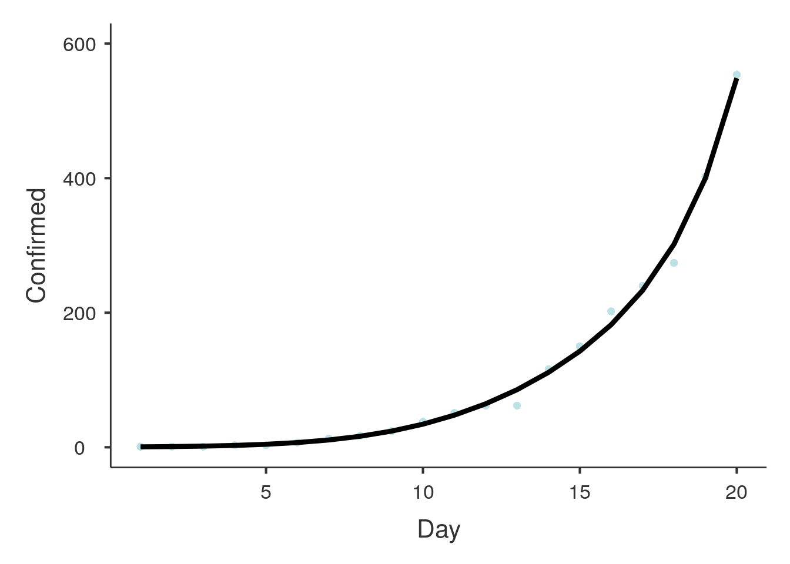
Parameter Estimates
─────────────────────────────────────────────────────────────────────────────────────
Names Estimate SE exp(B) Lower Upper z p
─────────────────────────────────────────────────────────────────────────────────────
(Intercept) -0.25571 0.26776 0.774 0.478 1.31 -0.955 0.344
Day 0.08112 0.06278 1.084 0.957 1.22 1.292 0.202
Day² -0.00496 0.00435 0.995 0.986 1.00 -1.141 0.259
Day³ 6.00e-5 1.12e-4 1.000 1.000 1.00 0.534 0.595
Day⁴ 6.05e-7 9.60e-7 1.000 1.000 1.00 0.630 0.531
─────────────────────────────────────────────────────────────────────────────────────
Sweden
R^2= 0.9850309
EC= 1230
AC= 2046
GF= 0.74
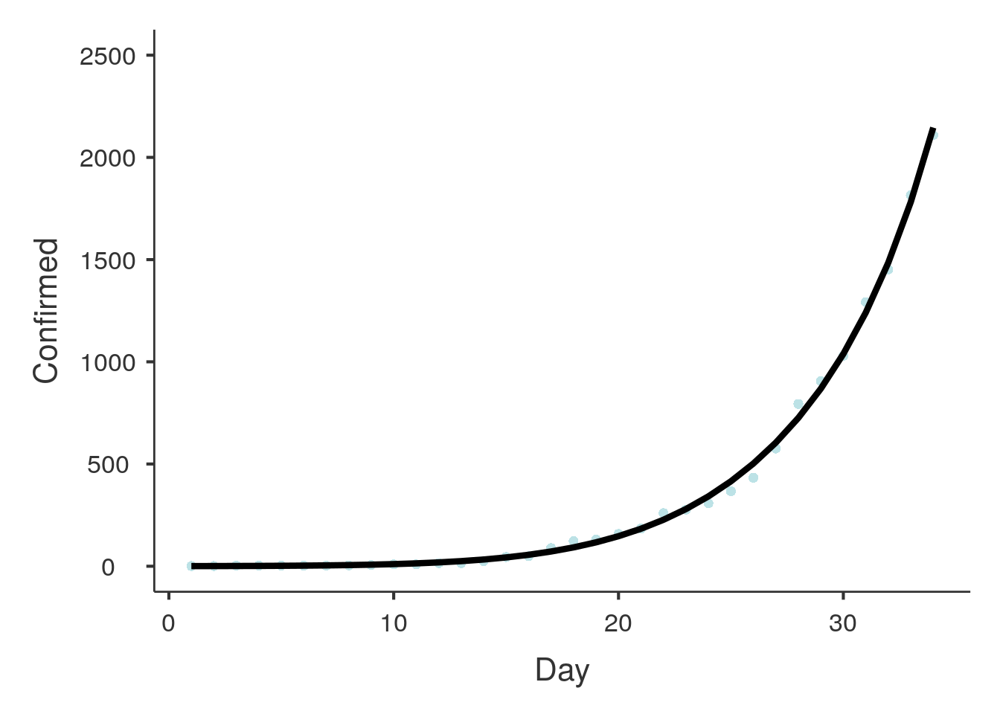
Parameter Estimates
──────────────────────────────────────────────────────────────────────────────────────
Names Estimate SE exp(B) Lower Upper z p
──────────────────────────────────────────────────────────────────────────────────────
(Intercept) -0.1566 0.23495 0.855 0.550 1.379 -0.667 0.508
Day 0.1331 0.05909 1.142 1.018 1.278 2.253 0.029
Day² -0.0210 0.00439 0.979 0.971 0.988 -4.788 < .001
Day³ 9.55e-4 1.22e-4 1.001 1.001 1.001 7.853 < .001
Day⁴ -1.05e-5 1.12e-6 1.000 1.000 1.000 -9.404 < .001
──────────────────────────────────────────────────────────────────────────────────────
Switzerland
R^2= 0.9888069
EC= 8473
AC= 8795
GF= 1.11
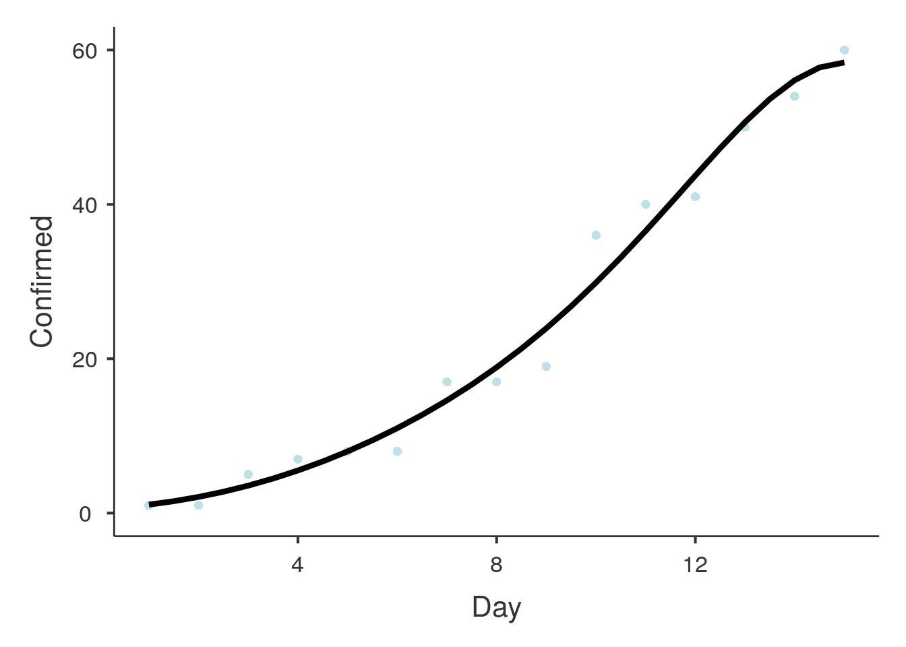
Parameter Estimates
─────────────────────────────────────────────────────────────────────────────────────
Names Estimate SE exp(B) Lower Upper z p
─────────────────────────────────────────────────────────────────────────────────────
(Intercept) -1.06774 0.2575 0.344 0.209 0.587 -4.15 < .001
Day 1.05406 0.1184 2.869 2.259 3.618 8.90 < .001
Day² -0.06708 0.0162 0.935 0.906 0.966 -4.14 < .001
Day³ 0.00246 8.32e-4 1.002 1.001 1.004 2.96 0.007
Day⁴ -3.39e-5 1.42e-5 1.000 1.000 1.000 -2.38 0.026
─────────────────────────────────────────────────────────────────────────────────────
Taiwan*
R^2= 0.9972104
EC= 192
AC= 195
GF= 1.08
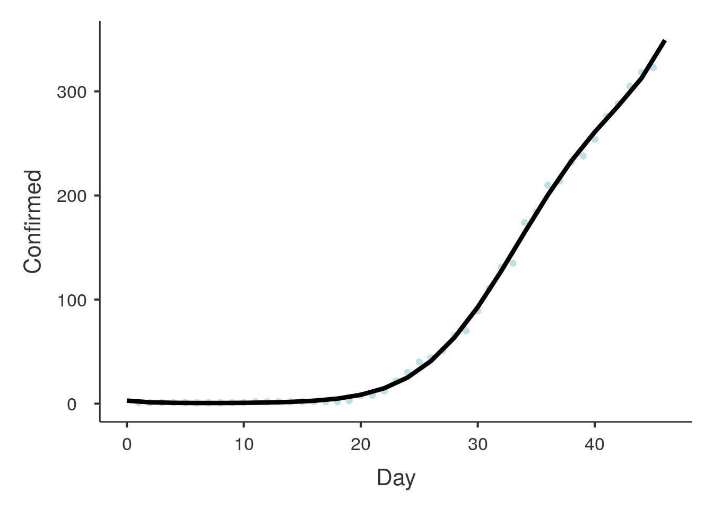
Parameter Estimates
───────────────────────────────────────────────────────────────────────────────────────
Names Estimate SE exp(B) Lower Upper z p
───────────────────────────────────────────────────────────────────────────────────────
(Intercept) 3.9489 0.07991 51.876 44.364 60.76 49.414 < .001
Day -0.0912 0.07268 0.913 0.791 1.05 -1.255 0.245
Day² 0.0277 0.02006 1.028 0.988 1.07 1.381 0.205
Day³ -6.95e-4 0.00212 0.999 0.995 1.00 -0.328 0.751
Day⁴ -2.32e-5 7.51e-5 1.000 1.000 1.00 -0.309 0.765
───────────────────────────────────────────────────────────────────────────────────────
Thailand
R^2= 0.9912822
EC= 717
AC= 721
GF= 1.34
Parameter Estimates
──────────────────────────────────────────────────────────────────────────────────────
Names Estimate SE exp(B) Lower Upper z p
──────────────────────────────────────────────────────────────────────────────────────
(Intercept) 0.77324 0.07979 2.167 1.839 2.564 9.691 < .001
Day 0.28468 0.01725 1.329 1.283 1.377 16.504 < .001
Day² -0.00949 0.00110 0.991 0.988 0.993 -8.619 < .001
Day³ 1.05e-4 2.62e-5 1.000 1.000 1.000 4.000 < .001
Day⁴ -2.09e-8 2.06e-7 1.000 1.000 1.000 -0.102 0.919
──────────────────────────────────────────────────────────────────────────────────────
Tunisia
R^2= 0.9829985
EC= 105
AC= 89
GF= 1.61
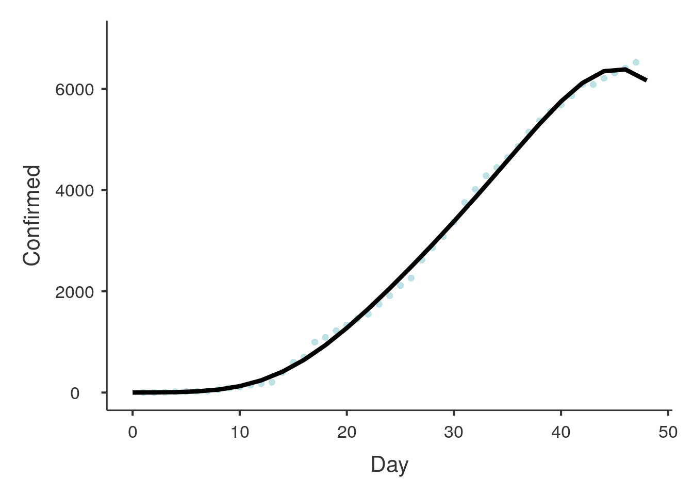
Parameter Estimates
─────────────────────────────────────────────────────────────────────────────────────
Names Estimate SE exp(B) Lower Upper z p
─────────────────────────────────────────────────────────────────────────────────────
(Intercept) 0.25212 0.30897 1.287 0.719 2.394 0.816 0.427
Day -0.41132 0.19312 0.663 0.451 0.966 -2.130 0.050
Day² 0.14061 0.03615 1.151 1.072 1.237 3.890 0.001
Day³ -0.00996 0.00256 0.990 0.985 0.995 -3.897 0.001
Day⁴ 2.26e-4 6.05e-5 1.000 1.000 1.000 3.732 0.002
─────────────────────────────────────────────────────────────────────────────────────
Turkey
R^2= 0.9841351
EC= 1508
AC= 1529
GF= 1.08
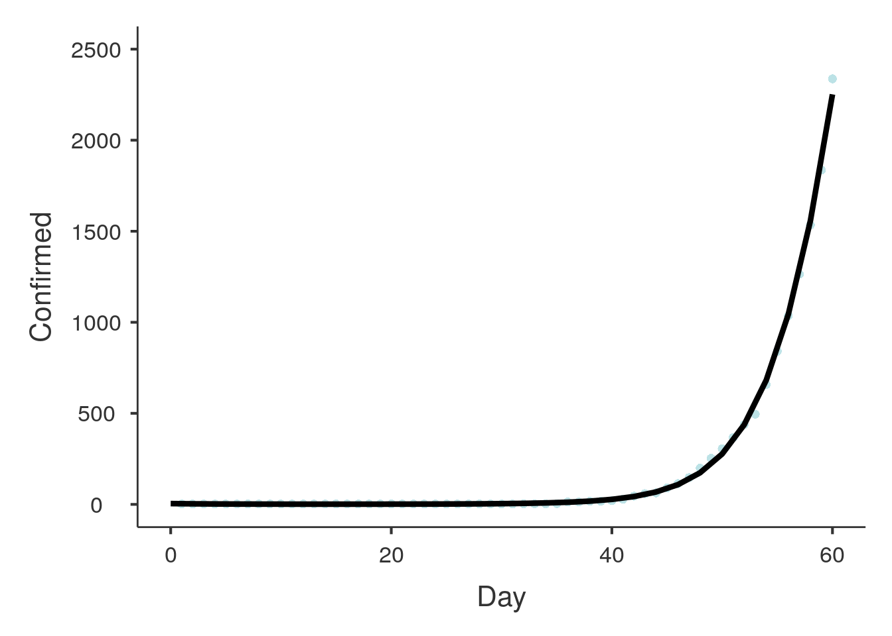
Parameter Estimates
─────────────────────────────────────────────────────────────────────────────────────
Names Estimate SE exp(B) Lower Upper z p
─────────────────────────────────────────────────────────────────────────────────────
(Intercept) -0.7531 0.7734 0.471 0.118 2.19 -0.974 0.359
Day 0.7523 0.7034 2.122 0.565 7.69 1.070 0.316
Day² -0.0778 0.1941 0.925 0.645 1.33 -0.401 0.699
Day³ 0.0128 0.0205 1.013 0.975 1.05 0.627 0.548
Day⁴ -5.87e-4 7.27e-4 0.999 0.998 1.00 -0.808 0.443
─────────────────────────────────────────────────────────────────────────────────────
UK
R^2= 0.9869452
EC= 6147
AC= 6726
GF= 1.09
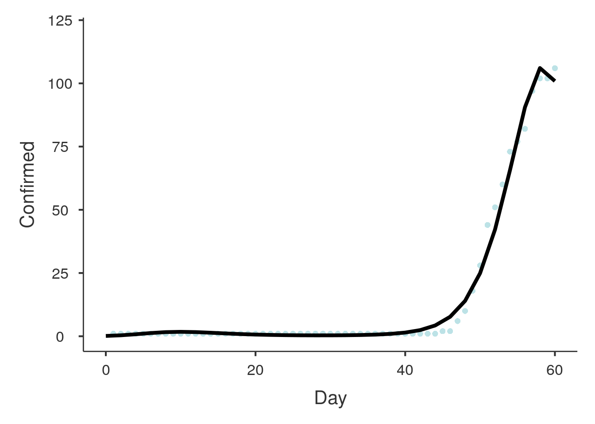
Parameter Estimates
──────────────────────────────────────────────────────────────────────────────────────
Names Estimate SE exp(B) Lower Upper z p
──────────────────────────────────────────────────────────────────────────────────────
(Intercept) -0.0586 0.21377 0.943 0.656 1.392 -0.274 0.785
Day 0.3244 0.05376 1.383 1.253 1.524 6.034 < .001
Day² -0.0218 0.00400 0.978 0.971 0.986 -5.457 < .001
Day³ 6.80e-4 1.11e-4 1.001 1.000 1.001 6.146 < .001
Day⁴ -6.14e-6 1.02e-6 1.000 1.000 1.000 -6.036 < .001
──────────────────────────────────────────────────────────────────────────────────────
Ukraine
R^2= 0.9836496
EC= 74
AC= 73
GF= 1.1
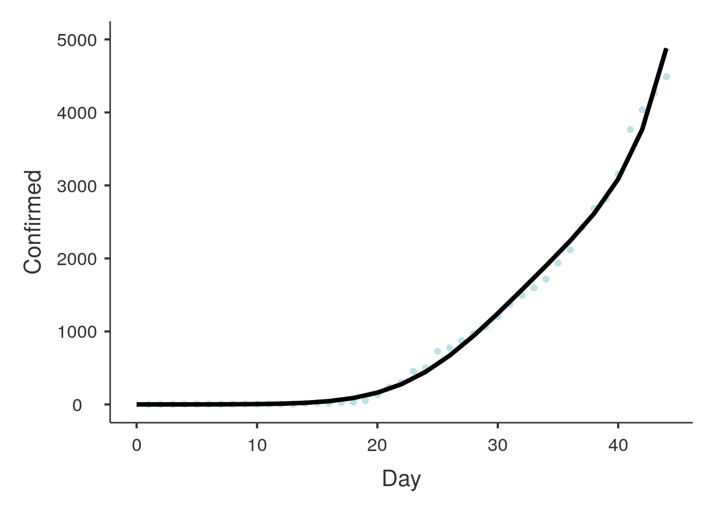
Parameter Estimates
──────────────────────────────────────────────────────────────────────────────────────
Names Estimate SE exp(B) Lower Upper z p
──────────────────────────────────────────────────────────────────────────────────────
(Intercept) 0.01432 0.34777 1.014 0.523 2.081 0.0412 0.968
Day 0.05330 0.20804 1.055 0.696 1.579 0.2562 0.801
Day² -0.03372 0.03723 0.967 0.899 1.041 -0.9058 0.378
Day³ 0.00449 0.00252 1.004 0.999 1.009 1.7843 0.093
Day⁴ -1.21e-4 5.68e-5 1.000 1.000 1.000 -2.1303 0.049
──────────────────────────────────────────────────────────────────────────────────────
United Arab Emirates
R^2= 0.9912295
EC= 170
AC= 198
GF= 1.03
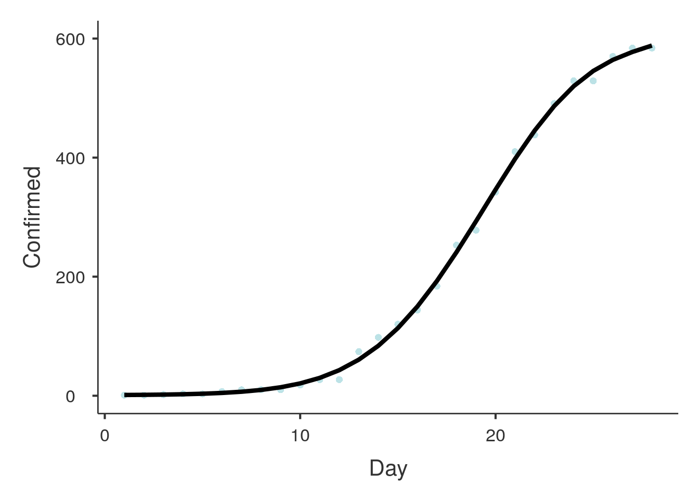
Parameter Estimates
─────────────────────────────────────────────────────────────────────────────────────
Names Estimate SE exp(B) Lower Upper z p
─────────────────────────────────────────────────────────────────────────────────────
(Intercept) 1.13500 0.08903 3.111 2.632 3.696 12.75 < .001
Day 0.11796 0.02161 1.125 1.079 1.172 5.46 < .001
Day² -0.00702 0.00155 0.993 0.990 0.996 -4.53 < .001
Day³ 2.26e-4 4.14e-5 1.000 1.000 1.000 5.45 < .001
Day⁴ -2.05e-6 3.67e-7 1.000 1.000 1.000 -5.60 < .001
─────────────────────────────────────────────────────────────────────────────────────
US
R^2= 0.9959115
EC= 42578
AC= 43667
GF= 1.32
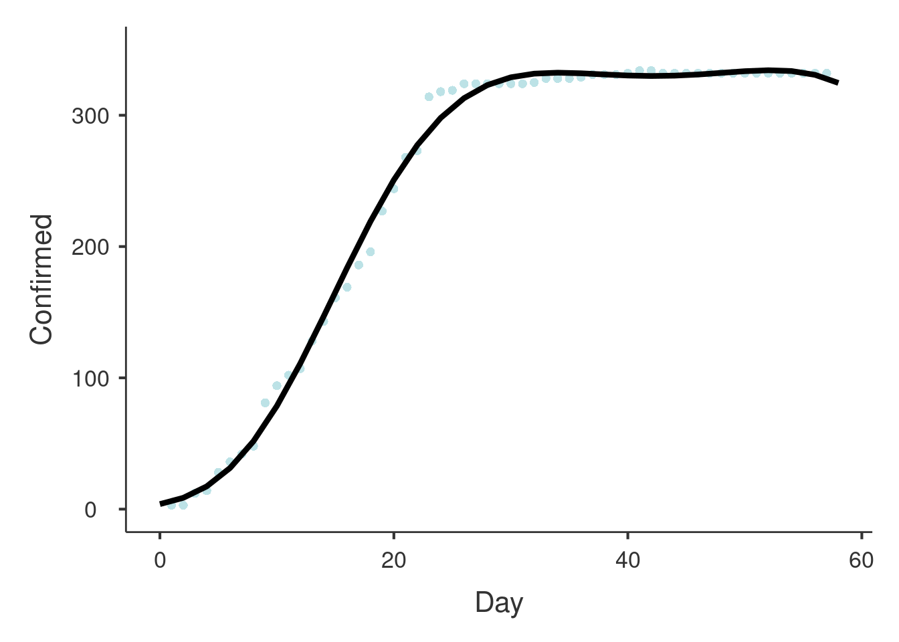
Parameter Estimates
──────────────────────────────────────────────────────────────────────────────────────
Names Estimate SE exp(B) Lower Upper z p
──────────────────────────────────────────────────────────────────────────────────────
(Intercept) -0.3369 0.12859 0.714 0.554 0.930 -2.62 0.011
Day 0.3881 0.02780 1.474 1.394 1.557 13.96 < .001
Day² -0.0200 0.00177 0.980 0.977 0.984 -11.27 < .001
Day³ 4.54e-4 4.22e-5 1.000 1.000 1.001 10.77 < .001
Day⁴ -3.00e-6 3.32e-7 1.000 1.000 1.000 -9.05 < .001
──────────────────────────────────────────────────────────────────────────────────────
Vietnam
R^2= 0.9466409
EC= 172
AC= 123
GF= 1.25
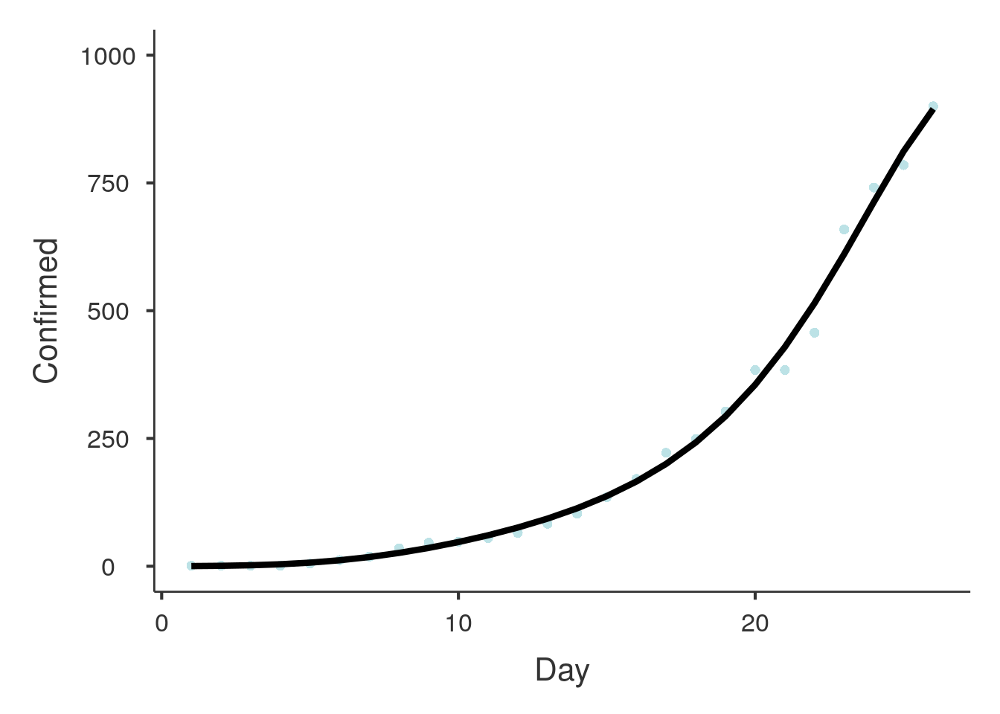
Parameter Estimates
────────────────────────────────────────────────────────────────────────────────────────
Names Estimate SE exp(B) Lower Upper z p
────────────────────────────────────────────────────────────────────────────────────────
(Intercept) 4.24e-4 0.16687 1.000 0.754 1.350 0.00254 0.998
Day 0.22430 0.03724 1.251 1.169 1.339 6.02346 < .001
Day² -0.00596 0.00245 0.994 0.989 0.999 -2.42739 0.019
Day³ 4.44e-5 6.02e-5 1.000 1.000 1.000 0.73792 0.464
Day⁴ 2.73e-7 4.90e-7 1.000 1.000 1.000 0.55665 0.580
────────────────────────────────────────────────────────────────────────────────────────